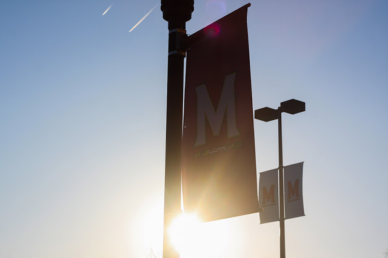

Explore a timeline of events from the fall semester.

The University of Maryland has taken several steps to prevent the spread of the coronavirus on campus. (Photo by Alyssa Kraus)
By Alyssa Kraus
It is no secret that the coronavirus has impacted all areas of life, from finances, to mental health, to education. Ever since mid-March, the University of Maryland has taken steps to support students, faculty and staff as they navigate their new normal.
Led by a promise for transparency, the university has kept the campus community updated on COVID-19 procedures for the fall semester. Through routine email statements, campus-wide testing and a COVID-19 dashboard, the university has attempted to control coronavirus cases and maintain a safe environment for the campus community.
Despite these actions, there have been frequent positive cases on campus, leading to events such as residence hall lockdowns and COVID-19 related student suspensions. Therefore, students are divided on whether the university’s procedures have been successful.
Freshman Olivia Janik from La Grange, Illinois chose to live on-campus in a residence hall for her first semester at the university. Janik tested positive for the coronavirus in early November.
“The university is trying its best to keep students safe and healthy this semester, but … I do think there’s a lack of follow through with the administration,” Janik said. “It seems that they only see their job as telling the students what to do, and if you get COVID-19, well it sucks to be you.”
However, sophomore Caitlyn Gay, a Huntingtown, Maryland native, believes the university has been successful at monitoring student health on campus.
“It’s a great idea to make all on-campus students get tested once a month,” Gay said. “It’s been good to see everyone wearing masks … Everyone seems to be abiding by the rules, even if they may seem strict, and that’s how we’re still able to be on campus.”
While the campus community remains divided during this uncertain period, the university continues to dole out new directives as the semester progresses.
To remain up-to-date on COVID-19 campus news, view the timeline below.
All students and employees returning in-person to a University System of Maryland institution must get tested for the coronavirus within 14 days of arriving, according to a University System of Maryland statement on July 30.
Each individual must provide confirmation of a negative test result, the statement read.
In addition, all students and employees must comply with Maryland guidelines for coronavirus testing and isolation. Those who test positive must follow-up with university professionals for medical requirements.
The statement lists multiple instructions for all on-campus individuals, including wearing a mask, remaining six-feet apart, complying with local guidance, maintaining vigilant hygiene and self-monitoring symptoms daily.
“Adherence to these testing, symptom monitoring, and disease mitigation protocols is essential to the safety of our USM community, and to our ability to resume and sustain in-person instruction this fall,” the statement read.
All students must take online classes for the first two weeks of the semester. (Photo by Alyssa Kraus)
The University of Maryland will delay in-person instruction by transferring all classes online for the first two weeks of the semester, university President Darryll Pines announced in a statement on Aug. 10.
University officials originally decided to begin the fall semester on Aug. 31 with blended-learning instruction, including both virtual and in-person courses. However, according to Pines’ email to students and faculty, blended learning will be postponed until Sept. 14 to combat the spread of the coronavirus.
“I know this two-week delay is disappointing, but it will permit us to phase in the resumption of on-campus activities and allow us to implement campus-wide virus testing,” Pines said in his statement.
However, the university will allow on-campus housing. Residence hall move-in will proceed as scheduled, but Pines predicts student occupancy rates of less than 45 percent.
“I know many of our students want to know if they should come to campus or not. Unfortunately, that is a question I cannot answer,” Pines wrote. “This is a complex choice and what is right for one student may not be for another.”
For students who are living on campus, Pines asks them to remain in their residences as much as possible during the first two weeks of virtual instruction.
University of Maryland students, faculty and staff must receive coronavirus testing before arriving on campus, interim health center director Sacared Bodison announced in a statement on Aug. 10.
While in-state and international students must be tested within 14 days of arrival with proof of a negative test, Bodison asks out-of-state students to be tested within 72 hours of arrival, if possible. In addition, students living in off-campus housing must provide proof of their COVID-19 tests before moving into their living quarters.
“Let us work together during this historic pandemic to create the safest environment possible and to protect those who are at greatest risk of severe illness if they contract the coronavirus,” Bodison said.
The statement also introduced mandatory post-arrival testing, stating that the university will conduct testing of all students on-campus or in the immediate area once they arrive.
Campus testing will be available beginning Aug. 17.
The University of Maryland launched a public COVID-19 dashboard that will keep the community updated on campus pandemic statistics, university President Darryll Pines said in a statement on Aug. 19.
The dashboard, Pines said, will include metrics such as university administered tests, campus positivity rates, campus density measures and isolation housing availability.
“Transparency and testing are two key measures in our plans for the gradual reopening of campus,” Pines said in regard to why the university created the dashboard.
The dashboard itself displays an overview of important campus COVID-19 data, such as new cases and university administered tests. This is followed by more detailed statistics, such as the daily ratio of faculty to student positivity rates and graphs of self-reported positive cases.
The data is updated weekly for any COVID-19 progressions.
Students, faculty and staff must monitor daily symptoms before coming to campus, leaving many areas empty. (Photo by Alyssa Kraus)
Individuals with ID card privileges must begin daily symptom self-monitoring 14 days before arriving on campus or at a university facility, interim health center director Sacared Bodison said in a statement on Aug. 27.
The daily symptom self-monitoring survey asks the campus community to examine a checklist of possible symptoms, such as high temperature, chills, new onset cough, trouble breathing, sore throat and more.
The survey also asks if the individual is waiting on results from a potential positive COVID-19 test, along with if the individual has been in contact with a person who may be positive.
“Don't forget to complete the checklist every day, even if you are not coming to campus that day, if you plan to be on campus within the next 14 days,” Vice President of Information Technology and Chief Information Officer Jeff Hollingsworth said in an email on Sept. 4. “We have learned that many people were unaware of the requirement to complete the symptom checklist even on days they didn't visit campus.”
In order to stay on track with daily self-monitoring, Hollingsworth recommends that students, faculty and staff turn on email reminders for the survey to be sent to their inbox each morning.
Nineteen students were issued interim suspensions after failing to adhere to the university’s coronavirus precautions, the university’s student conduct director Andrea Goodwin said in an email statement on Sept. 4.
The suspensions, which occurred on Sept. 3, were issued due to the risk the students posed to the campus community by not following proper protocols.
“The expectations have been very clear, and the majority of you are complying with guidelines,” Goodwin said in the statement. “Unfortunately, the number of positive COVID-19 cases has increased. This can largely be attributed to a failure by some to comply with 4 Maryland expectations ... and, at times, to the reckless disregard for the directives of the medical professionals at the University Health Center.”
However, at least 10 of the 19 suspensions have been lifted, student newspaper The Diamondback reported.
Nine of the lifted suspensions were issued to students who isolated in their apartments instead of in university isolation housing after testing positive, according to an article by The Diamondback. The other lifted suspension was issued to a student who tested negative but lives with a student who tested positive.
To avoid complications, the university’s Office of Student Conduct urges students to comply with guidelines and review safety expectations.
Some students, faculty and staff have grown frustrated over testing availability and result speed. (Photo by Alyssa Kraus)
Maryland athletic training has been suspended after 46 student-athletes tested positive following University Health Center screenings, the university’s strategic communications office said in a statement on Sept. 4.
The 46 positive tests span across 10 sports teams, resulting in a precautionary measure to suspend training, the statement read. A total of 501 student-athletes were tested.
Athletic director Damon Evans said student-athlete and staff safety is the university’s top priority during this time.
“The most recent testing results have revealed an uptick in positive tests among Maryland student-athletes. Out of an abundance of caution, we are temporarily pausing all workouts for our programs,” Evans said in the statement. “We look forward to when our student-athletes can safely return to workouts and then restart their seasons.”
A Shuttle-UM driver denied bus access to people without masks. (Photo by Alyssa Kraus)
The University of Maryland released a statement of support for a Shuttle-UM bus driver who faced disciplinary action from the university’s Department of Transportation Services for denying bus access to three people without masks.
The university’s police department was notified of damage to a Shuttle-UM bus around 9:30 p.m. on Sept. 2 after three people were denied entry onto the bus because they were not wearing facemasks, according to a police report. Upset by this, the suspects threw an unknown object at a passenger side window and caused damage to the bus.
After the incident, the Department of Transportation Service’s assistant general manager told the driver that he would face disciplinary action for refusing to allow the individuals onboard, university student newspaper The Diamondback reported.
In response, The American Federation of State, County and Municipal Employees Local 1072 took to Twitter to criticize the university’s lack of support for the bus driver.
“UMD DOTS HAS PROHIBITED BUS DRIVERS FROM ENFORCING THE MASK MANDATE ON BUSES,” a tweet from AFSCME Local 1072 read on Sept. 5.
🚨UMD DOTS HAS PROHIBITED BUS DRIVERS FROM ENFORCING THE MASK MANDATE ON BUSES.🚨 They are now required to let people without a mask board. An incident occured on Sept. 2, 2020 when a UMD bus driver stopped to pick up 2 students who were not wearing masks... (THREAD)
— AFSCME Local 1072 (@afscme_1072) September 5, 2020
However, two days later, in a statement to The Diamondback on Sept. 7, university spokesperson Katie Lawson said that the university fully supports the driver “who put first the health and safety of everyone on the bus.”
The Big Ten Conference will resume competition after a unanimous vote to adopt safety protocols before the nine-game season, the university announced on Sept. 16. This decision reverses university officials’ previous postponement of all athletic training following 46 positive student-athlete tests.
Football players, coaches and other participating individuals will be required to undergo routine testing and screening, the university’s strategic communications office said in a statement. Test results will be completed and recorded before all practices and games.
If athletes test positive, they must wait 21 days to return to competition, the university said.
“The health and well-being of our student-athletes, coaches and staff has always remained a priority, and the new medical protocols developed by medical professionals have put us all in a stronger position to resume competition,” athletic director Damon Evans said in the statement.
However, unlike previous seasons, there will be no fans in attendance and no season tickets.
Students in Denton Hall are required to restrict activities and self-monitor symptoms after 23 students tested positive for the coronavirus in the dorm, student newspaper The Diamondback reported. The 23 positive cases occurred over a two-week period.
All students who tested positive for the coronavirus are now isolating, according to the university’s Department of Resident Life. In addition, anyone identified as a close contact with those who tested positive has been placed in quarantine housing.
“All residents of Denton Hall must restrict activities, practice enhanced physical distancing, and self-monitor for the next 14 days,” the university said in a statement.
The safety protocol notice takes effect Friday, Sept. 18 and will remain until Friday, Oct. 2.
Students, faculty and staff are not cleared to come to campus unless they receive proof of a negative COVID-19 test result each month, interim health center director Sacared Bodison said in a statement on Sept. 30.
Anyone with significant in-person, on-campus needs must get tested each month and monitor their symptoms online each day, the statement said.
“Testing continues to be an important tool we are using to mitigate the spread of COVID-19,” Bodison said. “I appreciate everyone’s commitment to testing, and for following 4 Maryland guidance, as it is making a difference for our campus community.”
In order to support this mandate, the university will offer routine testing by appointment, according to Bodison. Test results can be confirmed through the university’s COVID-19 portal.
The campus remains relatively empty with a low student capacity. (Photo by Alyssa Kraus)
University President Darryll Pines announced that all University of Maryland courses will transition to an entirely online format following Thanksgiving break in an email statement on Nov. 5.
The decision to transfer all classes online, Pines said, is due to the possibility of high coronavirus cases during colder weather.
In addition, all students who travel home for Thanksgiving break should remain off-campus for the rest of the semester, the statement read. Resident Life will be working with residential students to provide further guidance.
“Like many of you, I wish for a return to normalcy for our university, including the full resumption of in-person classes and extracurricular activities,” Pines said. “Yet this virus continues to demand vigilance, patience and perseverance.”
Before returning home, students are advised to get tested for the coronavirus. There will be campus-wide testing the week prior to Thanksgiving, and testing will also continue after the break, Pines said.
In order to prevent the spread of the coronavirus on campus, student service locations like Eppley Recreation Center and STAMP Student Union will scale back operations on Nov. 25, Pines said. They will remain this way throughout the rest of the semester.